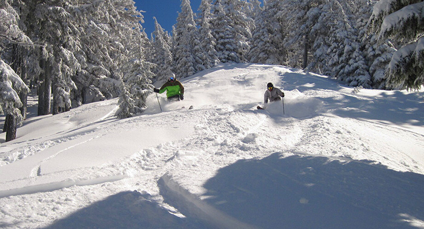

俄勒冈州位于美国的太平洋沿岸，该州南面为加利福尼亚州，北面为华盛顿州，气候温和，季节分明。在印第安语中，俄勒冈是“美丽之水”的意思。除了哥伦比亚河，你还可以在俄勒冈州领略到迷人的海岸地带，壮阔的山脉和内地高原风景，如火山口湖国家公园、富德火山等自然风景区。

皮托克大厦是一座百年历史的维多利亚式豪宅。在一个多世纪的岁月里，它见证了波特兰从一个美国西北部的小村庄慢慢变成拥有几十万人口的繁华都市。皮托克大厦原本是Henry 与Georgiana的家，如今已是波特兰的地标性建筑，很多游客来这里参观，感受19世纪末20世纪初波特兰人的生活。从Pittock Mansion俯瞰整个波特兰市，是最让人震撼的体验。
波特兰四季明显，且冬季并不寒冷气温适宜，这种气候最适合种植植物，加上威廉米特山谷肥沃的土壤，使波特兰成为了玫瑰花的理想家园。虽然年代久远，但是这所位于北波特兰的国际玫瑰实验园是波特兰第一个对外开放的玫瑰花园。园中的八角音乐台修建于1913年，在第一次世界大战期间曾被用于爱国游行，现今是众多婚礼和演唱会的首选之地。花园中心的喷泉，也已经存在了超过一个世纪的时间。
从波特兰市中心遥望东方，会看到一座白雪皑皑的雄伟大山突出于地平线上，那就是俄勒冈州的第一高峰，海拔3,429米的胡德山。胡德山属于喀斯喀特山脉（Cascade Range），这座山脉纵观美洲大陆的西北侧，巍峨群峰高耸，非常壮观，并以火山众多闻名。胡德山也是一座活火山，它最近一次大喷发是在1781年到1782年，之后也有一些微小的活动，因此有这丰富的自然地理景观和森林生态。胡德山的名字取自英国的海军将领胡德勋爵（Samuel Hood），早期移民以其积雪山顶为路标。现在，由26号、35号、84号公路组成了约236公里的胡德山风光带，沿途有高山、湖泊、森林、瀑布、薰衣草田等美景。
寻求刺激的人都知道，胡德河是世界的帆板和风筝冲浪之都。美食家也称赞它在本地食物运动中的核心角色，同样备受赞许的还有它的手工酿酒和胡德河乡村果园（Hood River Country Fruit Loop ）。
火山口湖国家公园，也被称作：克雷特湖国家公园，位于俄勒冈州南部，是州内唯一的一个国家公园。这块区域在大概7700年前形成，由于当时一次猛烈的喷发导致巍峨的马扎马火山自身发生了崩塌。喷发形成的六英里宽的喷火山口慢慢被水灌满，最终达到了1943英尺的深度。火山口湖成为了美国最深、最蓝的湖泊，宝石般的美丽吸引着全球的游客。
画山作为三个约翰时代化石床国家纪念地中的一个，以其壮丽的色彩和庄严的图案如王冠宝石般地闪耀于俄勒冈州的惠勒县。随着季节、气候和光线的不同，图案的色彩也在不断变幻，甚是瑰丽。每当狂风暴雨之时，红色、橘色、黄色、金色、黑色、灰色的条文图案更加明显，令观看者们无不瞠目结舌，满怀崇敬之心。这种独特的景观还要归功于这里特殊的粘土，它形成于3.5亿年前，又经火山喷发和气候改变的洗礼。随着时间的推移，其一次又一次地被强大的自然之力所改变，混合了矿物质、植物残余物辅以风和水的侵蚀才会最终呈现出如此不同的色彩。
宏伟的哥伦比亚河峡谷横穿喀斯喀特山脉，长达80英里，是太平洋西北部最引人注目的旅游目的地之一。美国国会于1986年将其指定为首个美国国家风景名胜区。宽至一英里的河流在两旁的火山岩哨兵——胡德山和亚当斯山的拱卫之下，从3,000英尺高的带状玄武岩石壁之下流过。

俄勒冈州的巴奇勒山是一座9,065英尺（约合2,763米）的火山锥，因太平洋西北岸沉重的海洋降雪特点，形成了这里如水泥厚板般的深厚且蓬松的积雪。每年从十一月到次年五月，各地的滑雪爱好者会聚集到这个俄勒冈州最大的滑雪区域，在火山顶曲折的雪道上，享受雪橇滑雪和滑板滑雪。巴奇勒山是冬季奥运会候选场地，举办过多场国际性赛事。这里也有适合家庭游玩的项目，比如雪橇犬游乐，不妨和你的家人一起来寻找冬日乐趣吧。
这里曾为美国土著部落重要聚集区，后来又成为开辟俄勒冈小道先驱的集合点。而如今，它因为一年超过300天的灿烂阳光吸引着八方来客。长久以来，甜樱桃的丰收使它闻名，它还是自行车、远足、划船、垂钓、历史和葡萄酒的爱好者的聚集地。一定要拜访滨河步道（Riverfront Trail），参观哥伦比亚峡谷发现中心（Columbia Gorge Discovery Center），并在阳光磨坊（Sunshine Mill）品尝美酒。